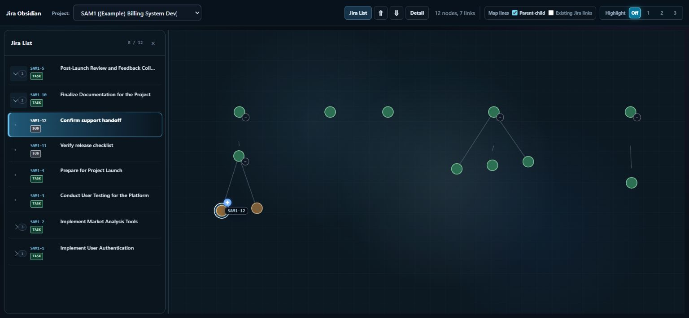
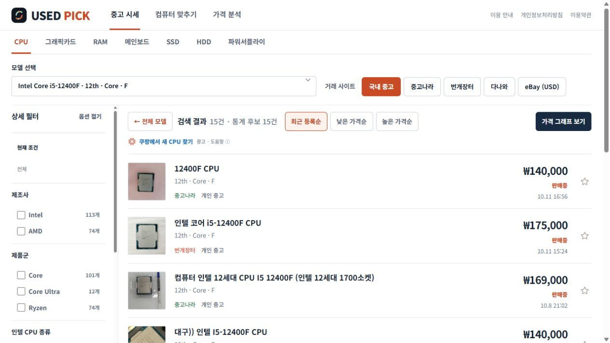

데이터·생활
K Stock
국내 주식의 가격 흐름과 지표를 탐색하는 리서치 서비스입니다. 조건별 종목 검색부터 상세 차트·산업군 비교까지 한 흐름으로 살펴봅니다.
- 종목 조건 검색
- 차트·지표 탐색
- 산업 흐름 비교
올라잇소프트는 데이터 탐색, 디지털 콘텐츠, 개발 도구를 만드는 소프트웨어 회사입니다. 일상과 업무에 필요한 기능을 제품으로 연결합니다.
제품 둘러보기

서비스의 역할과 주요 기능을 살펴보고, 실제 제품으로 이동하세요.
전체 7개 제품
데이터·생활
국내 주식의 가격 흐름과 지표를 탐색하는 리서치 서비스입니다. 조건별 종목 검색부터 상세 차트·산업군 비교까지 한 흐름으로 살펴봅니다.
데이터·생활
여러 중고 플랫폼의 PC 부품 매물과 표시 가격을 비교합니다. 모델별 가격 추이를 확인하고, 부품을 골라 PC 구성과 예산을 정리할 수 있습니다.
콘텐츠
Codex Pet을 찾고 움직임을 미리 보는 웹 카탈로그입니다. 9가지 동작을 확인해 필요한 패키지를 내려받고, 로그인 후 직접 만든 펫을 등록할 수 있습니다.
콘텐츠
디자인 작업에 활용할 투명 PNG 이모티콘 세트를 탐색합니다. 세트 전체나 개별 이미지를 내려받고, 제작자는 로그인 후 자신의 이미지 묶음을 게시할 수 있습니다.
개발 도구 · 브라우저 실습 환경
C 펌웨어와 모터 제어 회로를 연결해 보는 학습 환경입니다. 코드를 편집하고 센서 입력을 조절하며, 핀·레지스터·신호의 연결을 살펴봅니다.
개발 도구 · Jira Cloud 앱
Jira 이슈의 계층과 연결 관계를 지도처럼 탐색합니다. 이슈 트리·관계 맵·상세 정보를 함께 보고, 앱에서 만든 업무 관계를 관리할 수 있습니다.
콘텐츠 · 모바일 앱
운동 영상에서 나만의 브이로그까지.
운동 영상을 촬영하거나 가져와 날짜별로 기록합니다. 여러 클립의 구간·자막·이모티콘을 편집해 하나의 브이로그로 만들고, 저장한 편집을 이어갈 수 있습니다.
올라잇소프트는 수원에서 소프트웨어 제품을 설계하고 개발합니다. 정보를 비교하는 서비스부터 창작 콘텐츠와 개발 도구까지, 서로 다른 문제에 맞는 사용 경험을 만듭니다.
사용하는 흐름을 직접 살피고, 필요한 기능과 화면을 꾸준히 개선합니다.
제품 문의와 피드백을 기다립니다.
Suwon, Republic of Korea